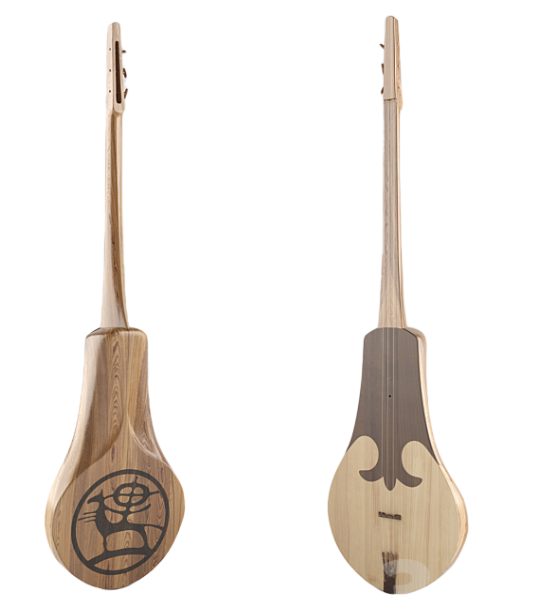
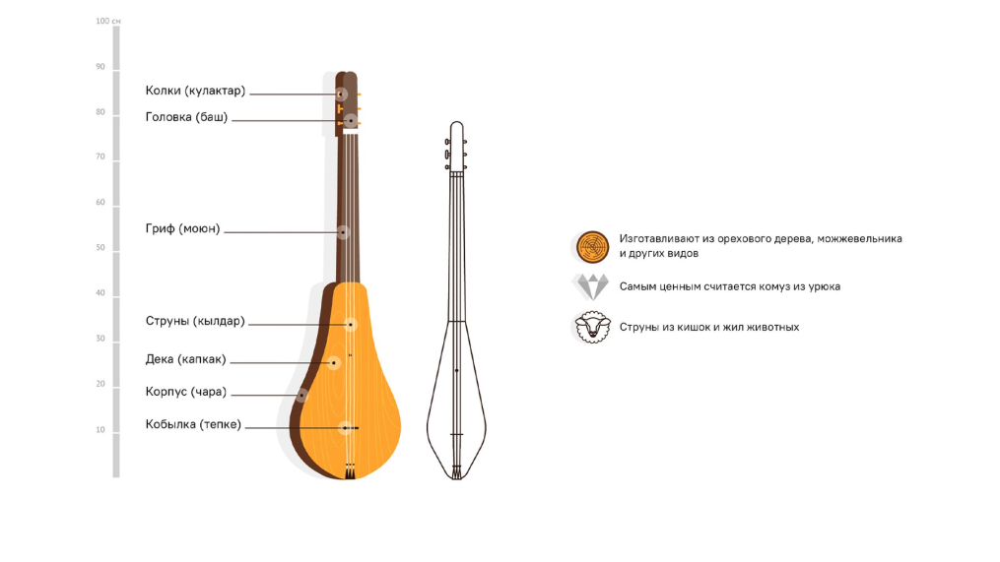

Комуз
Комуз – муундарды
байланыштырган аспап!
Комуз – кыргызстандын маданий мурасында негизги орунду ээлеген үч кылдуу кыргыздын салттуу музыкалык аспабы. Анын тарыхы көп кылымдарга барып такалат жана көптөгөн уламыштарда жана салттарда камтылган. Комуз жөнүндө эң алгачкы маалыматтар биздин заманга чейинки 201-жылга туура келет. 9–20-кылымдардын аягында комуз профессионал музыканттардын арасында кеңири тараган. Кыргызстанда акындардын ырдоосун коштоп, ар кандай майрамдарда дээрлик ар бир үйдө угулган. Илгерки заманда театр, кинотеатр болгон эмес, бир гана оюн-зоок акындардын комуз менен ойногону болгон. Бул аспаптын пайда болушу жөнүндө көптөгөн уламыштар бар, бирок бир нерсе анык: кыргыздар пайда болгондо комуз да пайда болгон.
Комуз жонүндө легенда
Комуздун жаралышы жөнүндө бир нече уламыштар бар. Алардын биринде байыркы заманда бир жаш мергенчи бир сулуу кызды сүйүп калып, ага үйлонүнү чечет, бирок сүйүүсүн кантип билдирерин билбей калганын айтат. Күндөрдүн биринде агымдын жээгинде ойго батып отуруп, керемет үндөрдү укту. Жакшылап караса, ал дарактардын ортосунда жиптер созулуп жаткандай сезилип, аларда сыйкырдуу ырдай шамал жаңырып жатканын көрдү. Алгач ал жиптер эмнеден токулганын көрө алган жок. Колуна тийгенде гана эчкинин кургатылган ичегилери экенин көрдүм. Сыягы, жырткыч курмандыгын даракка сүйрөп чыгып, бутактардагы курсагын жарып, бутактарга илинип калган ичеги-карындары куурап, керилип, жипке айланган окшойт.
Үндүн кооздугуна таң калган мергенчи кургап калган өрүктүн сөңгөгүн үзүп, аны көз жаштын формасындай кылып, жиптерин тартып, сулууга сүйүүсүн ырдап берет. Күүлөрдүн сулуулугуна суктанып, анын жубайы болуп калат. Ошентип, уламыш боюнча биринчи комуз чыгып, мергенчи «Күү атасы» болгон.
Түзүлүшү жана өзгөчөлүктөрү
Комуз бир жыгачтан, көбүнчө өрүк, жаңгак же тыттан жасалат. Анын узундугу болжол менен 90 см, ал эми дененин туурасы 19,5–22,5 см. Байыркы убакта жиптер жаныбарлардын ичегисинен жасалган, азыр синтетикалык материалдар көбүрөөк колдонулат;
Комуздун үнүнүн сапаты жыгачтан, чеберчиликтен көз каранды. Усталардын айтымында, эң мыкты аспаптар Баткендин өрүктөрүнөн жасалат. Орточо алганда, бир аспапты түзүү үч күндөн бир жумага чейин созулат. Ар бир комуз уникалдуу жана өзүнүн үнү бар. Байыркы комуздар атчанга ыңгайлуу болушу үчүн азыркы комуздарга караганда кичине болгон. Алар дененин формасы боюнча да айырмаланган. Ошентип, улуу акын Токтогулдун комузу ромб формасында болгон.
Бул кыргыз аспабынын алгачкы сүрөттөлүшү Сыма Цяндын (б. з. ч. 201) эмгектеринде кездешет. Комуз огуздардын «Китаби деде коркуд» эпосунда да (9-10-кылым) айтылып, кыргыздардын профессионалдык өнөрүндө (кесипкөй комузчуларды «комузчу» деп аташат) жана элдик турмушта азыркыга чейин кеңири таралган. Акындардын ырдоосун да коштойт. Азыркы практикада жеке аткаруудан тышкары комуз кыргыз эл аспаптар ансамблдеринде колдонулат.
Комуз жасоо этаптары
- Жыгачты тандоо жана даярдоо – негизинен өрүк, жаңгак, арча же тыт колдонулат. Жыгач кылдат кургатылышы керек.
- Корпусту жана мойнун түзүү – аспап бир бүтүн жыгачтан оюлуп жасалат, андан кийин корпусунун ичинде резонанстык көңдөй иштелип чыгат.
- Жылмалоо жана иштетүү – бардык беттери тегизделип, комуздун үнүн жана сырткы көрүнүшүн жакшыртуу максатында иштетилет.
- Кылдарды жасоо жана орнотуу – азыркы комуздардын ишкектери нейлондон же жибек жиптерден жасалат, алар жыгач колоктордун жардамы менен тартылат.
- Аспапты күүгө келтирүү – ишкектер орточо катуулукта тартылып, ортоңку ишкек негизги мелодияны ойноп, капталдагылары бурдондук коштоону камсыз кылышы керек.
Ар бир чебер комуз жасоо процессине өзүнүн өзгөчөлүктөрүн киргизип, кооз оюулар же улуттук орнаменттерди кошот. Бул ар бир комузга өзгөчө көрк берип, аймактын маданий салтын чагылдырат.
Комузда ойноо өнөрү
Комузду чеберчилик менен черткен музыканттар аны колунда айландырып, татаал чыгармаларды аткарышат. Добуш чыгаруунун көптөгөн ыкмалары бар: флажолеттер, баррэ, калыптын ритмикалык ургулары. Ладдардын жоктугу музыканттарга ар кандай обондорду чыгарууга мүмкүндүк берет, ал эми комуздун жумшак жана анча катуу эмес үнү аны өзгөчө жанга жакын кыла берет.
Комуз түрк элдеринин музыка маданиятында
Кыргыз комузуна тектеш болгон азербайжан гопузу, башкыр думбурасы, түрк копузу, казак домбурасы, кумук агач-кумузу, хакас хомысы, якут тангсары жана башка түрктөрдүн музыкалык аспаптары бар. Курулушундагы айырмачылыктарга карабастан, бул аспаптардын баарын бирдиктүү музыкалык салт байланыштырат.
Комуз – кыргыз маданиятынын жана салтынын символу.
Комуз – жөн гана музыкалык аспап эмес, ал кыргыз элинин маданиятын жана каада-салтын чагылдырган символ. Анын күүсү элдин рухун даңазалап, тарыхын, жашоосун жана философиясын баяндайт. Бүгүнкү күндө комуз Кыргызстанда улуттук майрамдарда, фестивалдарда жана күнүмдүк турмушта маанилүү орун ээлейт.